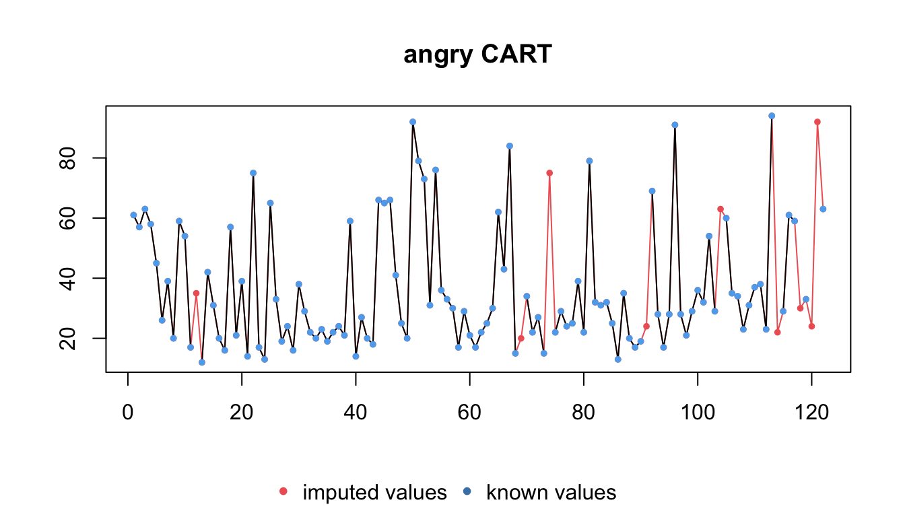
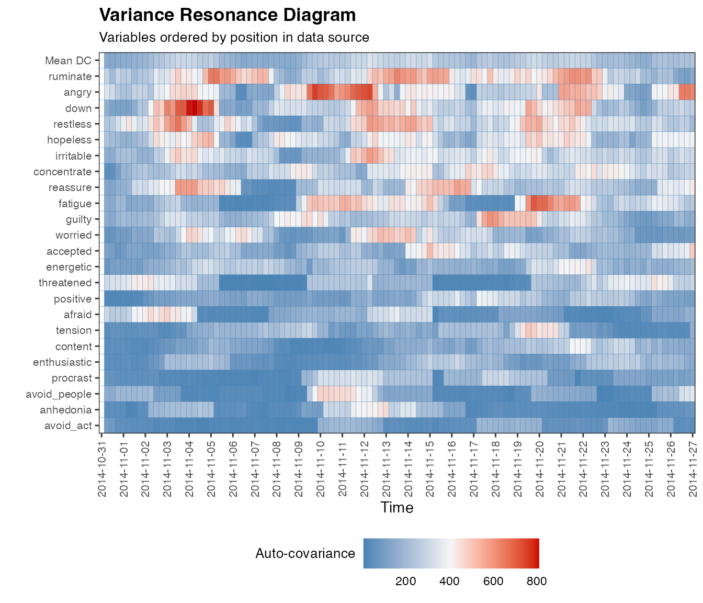
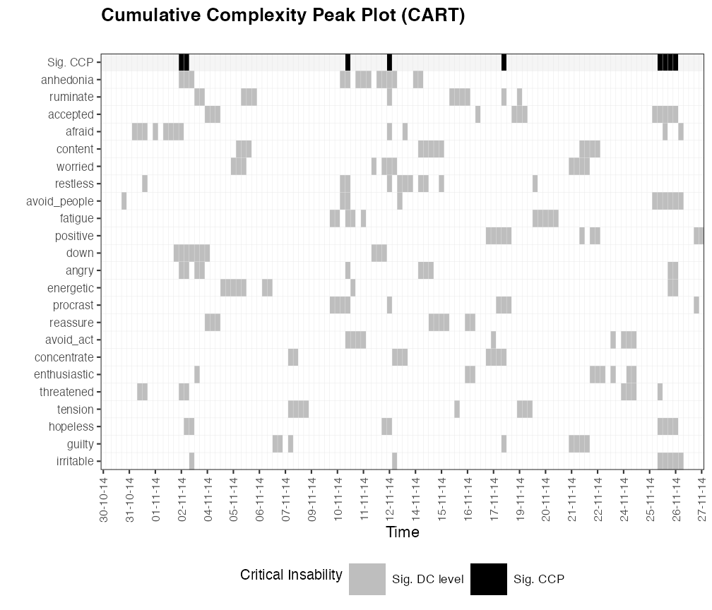
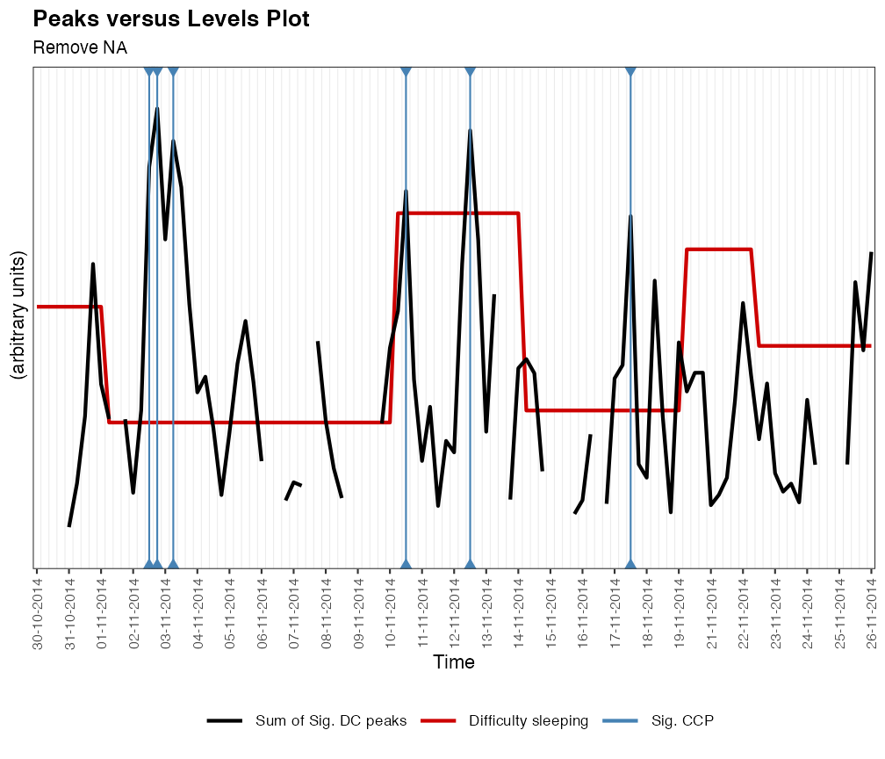
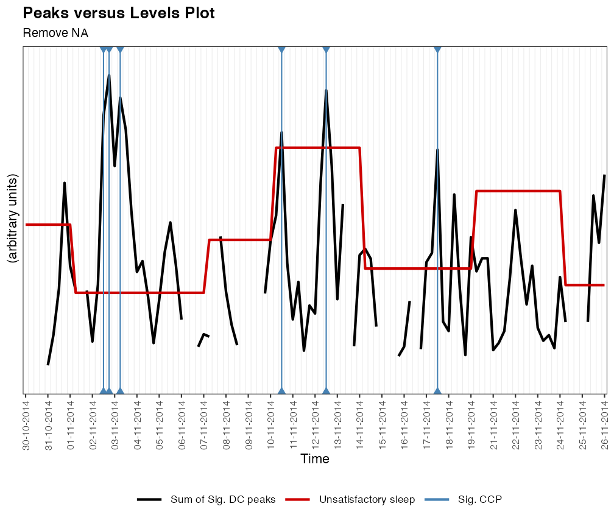

Applied Synergetics: Dynamic Complexity in a Clinical Case Study
Fred Hasselman & Merlijn Olthof
2019-06-11
Source:vignettes/dynamiccomplexity.Rmd
dynamiccomplexity.RmdApplied Synergetics: Dynamic Complexity
Early Warning Signals in a Clinical Case Study
Dynamic assessment, for example, ecological momentary assesment (EMA), is used more frequently in scientific studies on mental health. Process monitoring with dynamic assessment can empower patients and benefits self-insight (van Os et al., 2017). Additionally, EMA time series can be analysed and the results can be used to inform the treatment process.
In this vignette, we’ll use complex systems theory and methodology developed to analyse fluctuations in rating scale time series to perform a quantitative case study for real patient data. We’ll analyze publicly available EMA data from 1 patient that was drawn from a personalized psychotherapy study (cf. Fisher & Boswell, 2016) and was analysed by several different teams in a ‘Many Analysists’ study: Time to get personal? The impact of researchers’ choices on the selection of treatment targets using the experience sampling methodology by Bastiaansen et al. (2019).
We use the theoretical and analytic framework developed by Haken and Schiepek (2006), based on the mathematical theory of Synergetics, specifically the Dynamic Complexity Measure (Schiepek & Strunk, 2010). The main purpose of the vignette is to showcase the Dynamic Complexity functions family in casnet. The choice for the imputation method is explained in the vignette Dealing with missing values in time series.
Load clincal case data from OSF
Load the data used by Bastiaansen et al. (2019) from the Open Science Framework.
# # Load data from OSF https://osf.io/tcnpd/
# require(osfr)
# manyAnalystsESM <- rio::import(osfr::osf_download(osfr::osf_retrieve_file("tcnpd") , overwrite = TRUE)$local_path)
# Or use the internal data
data(manyAnalystsESM)Dealing with missing values
Most variables were measured three times in one day. We’ll check the time series for missing values using package imputeTS.
require(imputeTS)
require(mice)
# We want to use these variables
# Note: the infix function '%ci%' is from package 'invctr'
vars <- c(seq("energetic"%ci%manyAnalystsESM,"procrast"%ci%manyAnalystsESM),"avoid_people"%ci%manyAnalystsESM)
df_vars <- manyAnalystsESM[,vars]
# Plot the timeseries with NAs in red
op <- par(mfrow = c(ceiling(length(vars)/4),4),mar =c(2,2,2,2))
l_ply(seq_along(vars), function(c){
imputeTS::plotNA.distribution(x = as.numeric(df_vars[,c]),
main=colnames(df_vars)[c],
xlab = "",ylab = "")
})
par(op)
NA values seem to occur at the same time points across variables. This indicates the participant might have been unable to respond at those times and was not selectively omitting questions. See the vignette Dealing with missing values in time series
It’s a good practice to always compare results based on imputation to non-imputed data, se we’ll create two datasets:
- Remove all
NAvalues - Ipute missing data using the Multivariate Imputation by Chained Equations method implemented in package
mice.
From the description of the package: > The mice package implements a method to deal with missing data. The package creates multiple imputations (replacement values) for multivariate missing data. The method is based on Fully Conditional Specification, where each incomplete variable is imputed by a separate model.
The function mice() will try to select an imputation method based on the variable type if we leave the method argument empty. Here we’ll use method = "cart" to impute all missing data using Classification And Regression Trees. The same results can be obtained using the Random Forest method.
# 1. Remove NA
out.NA <- df_vars[stats::complete.cases(df_vars),]
# 2. Classification And Regression Trees / Random Forests
# RF and CART return (identical) discrete numbers
imp.cart <- mice::mice(df_vars, method = 'cart', printFlag = FALSE)
out.cart <- mice::complete(imp.cart)
# Plot the timeseries with NAs in red
for(c in c("angry"%ci%df_vars,"ruminate"%ci%df_vars)){
cat("Remove NA\n")
imputeTS::plotNA.imputations(x.withNA = as.numeric(df_vars[,c]),
x.withImputations = as.numeric(df_vars[,c]%00%0),
main = paste(colnames(df_vars)[c],"NA removed"), xlab = "", ylab = "")
cat("Classification And Regression Trees\n")
imputeTS::plotNA.imputations(x.withNA = as.numeric(df_vars[,c]),
x.withImputations = as.numeric(out.cart[,c]),
main = paste(colnames(df_vars)[c],"CART"), xlab = "", ylab = "")
}> Remove NA> Classification And Regression Trees
> Remove NA> Classification And Regression Trees
Phase transitions as sudden gains and losses
A (sudden) qualitative change in the behavioural regime of a system is often considered to be a shift from one relatively stable attractor-state to another. This shift is referred to as a phase, or, order transition. Phase transitions are preceded by a period of destabilization in which the stability of the existing attractor-state decreases (as a consequence of changing control parameters). During destabilization, the system loses its resilience to external influences (i.e. resistance to perturbation). Thas is often reflected by an increase in fluctuations and disorder in the behaviour of the system (critical fluctuations) and an increase in the time it takes to return to attractor-states from which the sytem it perturbed (critical slowing down). Destabilization ends abruptly when the system makes a phase transition towards a new stable state. Critical fluctuations and critical slowing down can therefore serve as early-warning signals (EWS) for imminent phase transitions.
Onset of pathology (e.g. psychosis), relapse in addiction, suicide attempts, sudden gains and losses, etc. Destabilization is most of the time a good thing in treatment: The goal of treatment is to change (destabilize) the existing stable, delibitating state into another stable state that is less problematic. During destabilization, the patient is expexted to be increasingly sensitive to external influences, or, perturbations (e.g. treatment). Destabilization could turn out to be a period in which an intervention has optimal results.
State variables
Often, the purpose of detecting early warning signals is to predict changes in a state variable, for example a test for depressive symptoms, or, a broad assesment by a therapist, measured once a week. Here we do not have clear apriori state variables, we’ll use the less densely measured variables on sleep quality as potential states. These variables were measured once per day:
-
hours(how many hours did you sleep last night?) -
difficult(experienced difficulty falling or staying asleep) -
unsatisfy(experienced restless or unsatisfying sleep)
We’ll assume these variables indicate a “global sate” of the system.
# Use the date information in the dataset to create time series objects
dates <- manyAnalystsESM$start[!is.na(manyAnalystsESM$unsatisfy)]
days <- as.Date(dates, "%m/%d/%Y")
hours <- manyAnalystsESM$hours[!is.na(manyAnalystsESM$hours)]
difficult <- manyAnalystsESM$difficult[!is.na(manyAnalystsESM$difficult)]
unsatisfy <- manyAnalystsESM$unsatisfy[!is.na(manyAnalystsESM$unsatisfy)]
df_sleep <- data.frame(days = days,
hours_sleep = hours,
difficult_sleep = difficult,
unsatisfy_sleep = unsatisfy) %>%
tidyr::gather(key = variable, value = quality_sleep, -days, factor_key = TRUE)
ggplot(df_sleep, aes(x = days, y = quality_sleep)) +
geom_line(linetype = 2) +
geom_point(pch=16, size=2, colour = "steelblue") +
facet_grid(variable~., scales = "free_y") +
scale_x_date(breaks = unique(days)) +
theme_bw() + theme(panel.grid.minor = element_blank(),
axis.text.x = element_text(angle = 90, vjust =0.5))Detecting periods of relative stability using recursive partitioning
We can use function ts_levels() to evaluate whether there are sudden jumps (gains or losses) in the data. The method uses function rpart::rpart() and has several arguments that control when a level should be considered, that is, how many datapoints should a level last minimally; how much must the signal change before a new level is considered, etc. Check the manual pages for more details. `
The value of minDataSplit tells the algorithm how many data points need to be in a segment before a change of level is considered. Here we choose minDataSplit = 6, which is 2 days.
minSplit = 6
lvl1 <- ts_levels(hours, minDataSplit = minSplit)
lvl2 <- ts_levels(difficult, minDataSplit = minSplit)
lvl3 <- ts_levels(unsatisfy, minDataSplit = minSplit)
# ggplot likes the long data format
df_sleep$level <-
data.frame(days = days,
hours_sleep_lvl = lvl1$pred$p,
difficult_sleep_lvl = lvl2$pred$p,
unsatisfy_sleep_lvl = lvl3$pred$p) %>%
tidyr::gather(key = variable_lvl, value = level, -days, factor_key = TRUE) %>%
dplyr::select("level") %>%
unlist(.)
ggplot(df_sleep, aes(x = days)) +
geom_line(aes(y = quality_sleep), linetype = 2) +
geom_point(aes(y = quality_sleep), pch=16, size=2, colour = "steelblue") +
geom_line(aes(y = level), colour = "red3") +
facet_grid(variable~., scales = "free_y") +
scale_x_date(breaks = unique(days)) +
theme_bw() + theme(panel.grid.minor = element_blank(),
axis.text.x = element_text(angle = 90, vjust =0.5))
There appear to be more or less synchronous jumps and stages, or, levels in the raw data of variables difficult and unsatisfy. The levels in variable hours, representing hours of sleep seem to show the inverted pattern.
Detecting Early Warning Signals (EWS) using Dynamic Complexity
Now it is time to analyze the dynamic complexity of the ESM time series and see if we can find early-warning signals.
Use dc_win() to calculate Dynamic Complexity. The function can also call plotDC_res() to produce a Complexity Resonance Diagram.
We need to make sure all variables are on the same scale, for this dataset there’s no need to transform, all data are on a scale of 0-100. If no value is passed to arguments from_scale_min and from_scale_max and argument rescale = TRUE then the minimum and maximum value in each column will be used. This should be used if scale limits are unknown (or -Inf and +Inf). If the theoretical limits are known, they should be passed. If the data contain a mix of known scale ranges, transformation should be done manually.
win = 6
# NA removed
dc.caseNA <- dc_win(out.NA, win = win, col_first=1, col_last=NCOL(out.NA), from_scale_min = 0, from_scale_max = 100, to_scale_min=0, to_scale_max=100, doPlot = TRUE, colOrder = TRUE)
Dynamic complexity is calculated as a product of fluctuation intensity calculated by function dc_f() and distribution uniformity calculated by dc_d(). These functions can be called seperately, or, you can set the argument returnFandD = TRUE in function dc_win().
There are several options for sorting the variables on the y-axis by setting the colOrder argument. If set to TRUE like the figure above the order variables appear as columns in the dataframe will be used. Setting it to FALSE will sort by vasriable name.
We can use the df field of the dc_win() output as input for plotDC_res().
plotDC_res(df_win = dc.caseNA, win = win, doPlot = TRUE, colOrder = FALSE)
An interesting option is to sort by the mean value of Dynamic Complexity, to do so set the colOrder argument to NA.
plotDC_res(df_win = dc.caseNA, win = win, doPlot = TRUE, colOrder = NA)Let’s compare to the cart imputation by MICE.
# CART with observed scale
dc.caseIMP <- dc_win(out.cart, win=win, col_first=1, col_last=NCOL(out.cart), from_scale_min = 0, from_scale_max = 100, to_scale_min=0, to_scale_max=100, colOrder = TRUE)
plotDC_res(df_win = dc.caseIMP, win = win, doPlot = TRUE, colOrder = NA, title = "Complexity Resonance Diagram (CART)")
There are some differences, and this is expected of course when imputing or removing NAs. To see how these differences may affect the inference of periods of destabilisation we run the Cumulative Complexity Peak analysis on both datasets.
Cumulative Complexity Peaks
The Cumulative Complexity Peak analysis identifies time points in which Dynamic Complexity in multiple items is high and therefore should be considered a period of destabilisation. First, it identifies for each time point which peaks are significantly > 0, by calculating Z-scores for each column (time point) and comparing to a critical Z-value (one-sided). Then, the number of significant peaks for each time point is determined and this distribution is again transformed into Z-scores and evaluated for > 0.
If we plot 2 versions of the analysis, the differences between the methods are apparent, but overall both methods seem to recover the same periods of destabilisation.
# Use the date information in the dataset to create time series objects
datesNA <- manyAnalystsESM$start[complete.cases(df_vars)]
daysNA <- as.Date(datesNA, "%m/%d/%Y")
ccp.caseNA <- dc_ccp(df_win = dc.caseNA)
plotDC_ccp(df_ccp = ccp.caseNA, win = win, colOrder = NA, title = "Cumulative Complexity Peak Plot (Remove missing values)", useTimeVector = daysNA)
datesIMP <- manyAnalystsESM$start
dateTimesIMP <- strptime(datesIMP, "%m/%d/%Y %H:%M")
ccp.caseIMP <- dc_ccp(df_win = dc.caseIMP)
# Change the time stamp fromat
plotDC_ccp(df_ccp = ccp.caseIMP, win = win, colOrder = NA,
useTimeVector = dateTimesIMP, timeStamp = "31-01-99",
title = "Cumulative Complexity Peak Plot (CART)")
We can query which timepoints a Complexity Peaks were registered.
# Remove NA
dateTimesNA <- strptime(datesNA, "%m/%d/%Y %H:%M")
dateTimesNA[ccp.caseNA$sig.peaks>0]> [1] "2014-11-10 21:05:00 CET" "2014-11-11 17:21:00 CET"
> [3] "2014-11-12 21:37:00 CET" "2014-11-13 09:28:00 CET"
> [5] "2014-11-13 13:03:00 CET" "2014-11-13 17:29:00 CET"
> [7] "2014-11-22 09:39:00 CET" "2014-11-22 13:22:00 CET"
> [9] "2014-11-26 17:30:00 CET" "2014-11-27 09:29:00 CET"# CART
dateTimesIMP[ccp.caseIMP$sig.peaks>0]> [1] "2014-11-10 21:05:00 CET" "2014-11-12 21:37:00 CET"
> [3] "2014-11-14 17:06:00 CET" "2014-11-14 21:15:00 CET"
> [5] "2014-11-15 13:30:00 CET"Plot ‘state’ versus complexity
One could look for a single variable that best predicts level changes, e.g. by looking at crosscorrelation functions, or by extracting peak-complexity times and gain/loss events can average the time course of dynamic complexity in a number of ways. Here we use the
# Dates for state variables
dates <- manyAnalystsESM$start
dateTimesS <- as.POSIXct(strptime(dates, "%m/%d/%Y %H:%M"))
idNA <- complete.cases(df_vars)
df_lvl_hrs <- ts_levels(manyAnalystsESM$hours,minDataSplit = minSplit)
df_lvl_diff <- ts_levels(manyAnalystsESM$difficult,minDataSplit = minSplit)
df_lvl_unsat <- ts_levels(manyAnalystsESM$unsatisfy,minDataSplit = minSplit)
df_lvl_hrsNA <- ts_levels(manyAnalystsESM$hours[idNA],minDataSplit = minSplit)
df_lvl_diffNA <- ts_levels(manyAnalystsESM$difficult[idNA],minDataSplit = minSplit)
df_lvl_unsatNA <- ts_levels(manyAnalystsESM$unsatisfy[idNA],minDataSplit = minSplit)
plotDC_lvl(df_ccp = ccp.caseIMP, df_win = dc.caseIMP, df_lvl = df_lvl_hrs, useTimeVector = dateTimesS, win = win, subtitle = "CART", levelName = "Hours sleep")
plotDC_lvl(df_ccp = ccp.caseNA, df_win = dc.caseNA, df_lvl = df_lvl_hrsNA, useTimeVector = dateTimesS[idNA], win = win, subtitle = "Remove NA", levelName = "Hours sleep")plotDC_lvl(df_ccp = ccp.caseIMP, df_win = dc.caseIMP, df_lvl = df_lvl_diff, useTimeVector = dateTimesS, win = win, subtitle = "CART", levelName = "Difficulty sleeping")plotDC_lvl(df_ccp = ccp.caseNA, df_win = dc.caseNA, df_lvl = df_lvl_diffNA, useTimeVector = dateTimesS[idNA], win = win, subtitle = "Remove NA", levelName = "Difficulty sleeping")
plotDC_lvl(df_ccp = ccp.caseIMP, df_win = dc.caseIMP, df_lvl = df_lvl_unsat, useTimeVector = dateTimesS, win = win, subtitle = "CART", levelName = "Unsatisfactory sleep")
plotDC_lvl(df_ccp = ccp.caseNA, df_win = dc.caseNA, df_lvl = df_lvl_unsatNA, useTimeVector = dateTimesS[idNA], win = win, subtitle = "Remove NA", levelName = "Unsatisfactory sleep")
Look for max complexity peaks around level changes.
References
Bastiaansen, J. A., Kunkels, Y. K., Blaauw, F., Boker, S. M., Ceulemans, E., Chen, M., … Bringmann, L. F. (2019, March 21). Time to get personal? The impact of researchers’ choices on the selection of treatment targets using the experience sampling methodology. https://doi.org/10.31234/osf.io/c8vp7
Fisher, A. J., & Boswell, J. F. (2016). Enhancing the personalization of psychotherapy with dynamic assessment and modeling. Assessment, 23(4), 496–506. https://doi.org/10.1177/1073191116638735-Fisher
Haken H, & Schiepek G. (2006). Synergetik in der Psychologie. Selbstorganisation verstehen und gestalten. Hogrefe, Göttingen.
Schiepek, G. (2003). A Dynamic Systems Approach to Clinical Case Formulation. European Journal of Psychological Assessment, 19, 175-184. https://doi.org/10.1027//1015-5759.19.3.175
Schiepek, G., & Strunk, G. (2010). The identification of critical fluctuations and phase transitions in short term and coarse-grained time series-a method for the real-time monitoring of human change processes. Biological cybernetics, 102(3), 197-207. https://doi.org/10.1007/s00422-009-0362-1